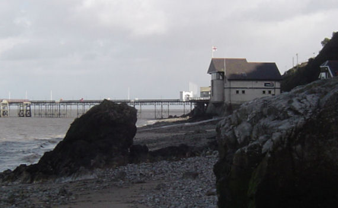

The rock-arch. Click the picture to see an overlay of the 1805 print and again to see the complete image (for those without Javascript, here's the overlay and print).
Print image © Swansea Museum, all rights reserved. Thanks go to Swansea Museum for allowing use of this image here.